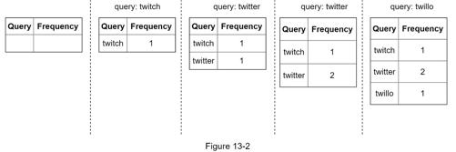
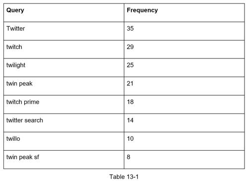
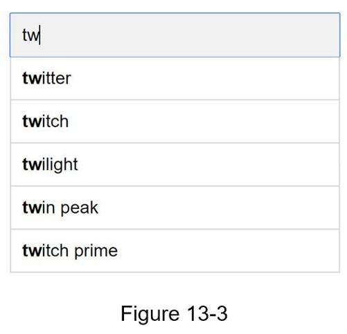
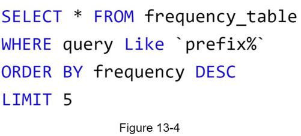

At the high-level, the system is broken down into two:
•Data gathering service: It gathers user input queries and aggregates them in real-time. Real-time processing is not practical for large data sets; however, it is a good starting point. We will explore a more realistic solution in deep dive.
•Query service: Given a search query or prefix, return 5 most frequently searched terms.
Let us use a simplified example to see how data gathering service works. Assume we have a frequency table that stores the query string and its frequency as shown in Figure 13-2. In the beginning, the frequency table is empty. Later, users enter queries “twitch”, “twitter”, “twitter,” and “twillo” sequentially. Figure 13-2 shows how the frequency table is updated.

Assume we have a frequency table as shown in Table 13-1. It has two fields.
•Query: it stores the query string.
•Frequency: it represents the number of times a query has been searched.

When a user types “tw” in the search box, the following top 5 searched queries are displayed (Figure 13-3), assuming the frequency table is based on Table 13-1.

To get top 5 frequently searched queries, execute the following SQL query:

This is an acceptable solution when the data set is small. When it is large, accessing the database becomes a bottleneck. We will explore optimizations in deep dive.